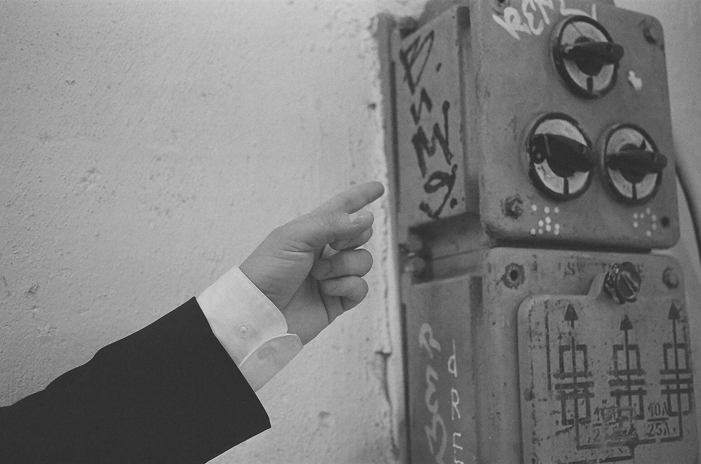

Cześć!
Nazywam się Karol i pomagam artystom zamienić wizję w skuteczny plan działania.
Czym się zajmuję
Większość artystów nie ma problemu z brakiem pomysłów. Ma problem z nadmiarem rzeczy robionych bez określonego kierunku i planu.
Dobry materiał, aktywne socjale, kilka zleceń i sporo pracy często nie wystarczają, jeśli brakuje:
- spójnego wizerunku
- jasnej komunikacji
- dobrych materiałów dla mediów i partnerów
- strony lub systemu online, który porządkuje uwagę odbiorców
- planu, co robić i w jakiej kolejności
Właśnie tym się zajmuję.
Pomagam przejść od chaosu do spójnego systemu działania — takiego, który lepiej pokazuje Twój
potencjał i ułatwia rozwój.
Z kim pracuję
Pracuję zarówno z twórcami indywidualnymi, jak i zespołami, które mają już swój materiał, koncerty albo publiczność, ale też takimi, które dopiero planują wydanie pierwszego singla i chcą wejść na rynek w pełni przygotowane do działania.
Prowadzę konsultacje z regularnie koncertującymi zespołami, które czują, że ich komunikacja jest niespójna albo chaotyczna. Które chcą wejść poziom wyżej swoim nakładem pracy, bez kontraktowania stałego menedżera, i które potrzebują pomocy w zbudowaniu strategii oraz praktycznego wdrożenia planu w życie zespołu.
Ta współpraca będzie dla Was szczególnie dobra, jeśli:
- nie wiecie, jak mówić o swoim zespole lub o sobie jako artystach
- macie poczucie chaosu w komunikacji
- macie dobrą muzykę, ale słabo to widać na zewnątrz
- potrzebujecie strony, Electronic Press Kitu albo materiałów do bookingu
- chcecie lepiej zaplanować premierę singla, EP albo trasy
- szukacie kogoś, kto pomoże Wam uporządkować kierunek Waszych działań
Z czym pomagam
1. Strategia
Porządkuję kierunek działania zespołu: cele, odbiorców, priorytety, komunikację i plan ruchów na najbliższe miesiące.
2. Wizerunek
Pomagam nazwać i opisać to, co w zespole najcenniejsze — tak, żeby było czytelne dla fanów, mediów i organizatorów.
3. Narzędzia
Tworzę strony internetowe, EPK, systemy linków i podstawowe rozwiązania, które porządkują Waszą obecność online.
4. Wsparcie
Doradzam przed premierami, koncertami i ważnymi decyzjami, żeby zespół nie wracał do chaosu po pierwszym wdrożeniu.
Oferta
Każda współpraca zaczyna się od bezpłatnej konsultacji, na której ustalamy, w jakich kwestiach potrzebujecie pomocy.
Poniżej znajdziesz przykładowe pakiety usług, które często wybierają zespoły, ale to tylko przykłady — każdy z nich można dowolnie modyfikować, łączyć albo zamawiać pojedyncze usługi. Jeśli masz pytania, pisz śmiało!
Konsultacja menedżerska
Rozmowa online, telefoniczna lub osobista, na której skupiamy się na Waszych aktualnych potrzebach i celach. Każda rozmowa jest inna, ale zwykle jest to połączenie diagnozy, burzy mózgów i wskazówek, po której otrzymujecie jasne kierunki działania.
Dla kogo: dla tych z Was, którzy potrzebują szybkiego wsparcia, jasności i konkretów do wdrożenia, ale nie są jeszcze gotowi na dłuższą współpracę albo chcą ją przetestować.
Co zawiera:
- spotkanie 30–90 min (w zależności od potrzeby)
- podsumowanie z wnioskami i punktami działania w formie pisemnej
Audyt i kierunek
Analiza marki, komunikacji, obecności online, materiałów i sposobu działania zespołu. Dostajecie jasną diagnozę i plan, co poprawić najpierw.
Dla kogo: dla zespołów, które potrzebują spojrzenia z zewnątrz i dobrego punktu startu.
Co zawiera:
- analiza marki i komunikacji
- analiza strony, EPK, linków i social mediów
- konsultacja
- roadmapa działań na 30 dni
Strategia singla, EP lub trasy
Tworzę plan promocji oparty nie tylko na kalendarzu postów, ale na sensie premiery: historii, komunikatach, materiałach, kanałach i CTA.
Dla kogo: dla zespołów, które chcą lepiej wykorzystać uwagę wokół premiery albo koncertów.
Co zawiera:
- strategia premiery
- harmonogram działań
- plan treści
- lista materiałów
- rekomendacje kanałów
- omówienie wdrożenia
EPK i materiały bookingowe
Porządkuję i tworzę materiały, które pomagają rozmawiać z mediami, klubami, festiwalami i partnerami. To nie tylko strona, ale system, który pokazuje potencjał zespołu i ułatwia kontakt z nim.
Dla kogo: dla zespołów, które chcą wyglądać profesjonalnie i nie improwizować przy każdym kontakcie branżowym.
Co zawiera:
- Press Kit w wersji online oraz pliki do druku
- bio short / medium / long
- opis koncertowy
- one-sheet
- materiały do bookingu
- szablony komunikacji do mediów i organizatorów
Strona internetowa
Projektuję i wdrażam strony, które nie są tylko wizytówką, ale realnym zapleczem komunikacji: z muzyką, koncertami, bio, mediami, kontaktem i zapisami.
Dla kogo: dla zespołów, które chcą mieć jedno porządne miejsce online.
Co zawiera:
- struktura strony
- copy
- wdrożenie
- porządek w linkach i CTA
- kontakt / newsletter
- sekcje muzyka, koncerty, media
- SEO
- pomoc przy wykupieniu domeny i hostingu
Stałe wsparcie doradcze
Regularne konsultacje, feedback do działań, korekty kierunku i wsparcie przy decyzjach strategicznych. To opcja dla zespołów, które chcą mieć stałego partnera do rozmowy o rozwoju i nie wracać do chaosu po pierwszym wdrożeniu.
Dla kogo: dla zespołów, które chcą działać bardziej świadomie i mieć partnera do myślenia.
Co zawiera:
- 2 spotkania miesięcznie
- bieżące konsultacje
- feedback do komunikacji
- wsparcie przy premierach i bookingu
- korekty planu działań
O mnie
Nazywam się Karol Konop. Jestem inżynierem informatykiem oraz menedżerem artystycznym i od ponad 10 lat zawodowo zajmuję się zarządzaniem zespołami i projektami. Zarówno tymi muzycznymi, jak i inżynierskimi. Jestem menedżerem zespołu CHRUST — zespołu, który zdobył O!Lśnienie 2026 w kategorii Muzyka popularna za album „Przed Zmierzchem”, został nominowany do Fryderyka 2026 w kategorii Album Roku Muzyka Korzeni za ten sam album i był finalistą polskich kwalifikacji do Eurowizji 2025.
To połączenie nie jest przypadkowe.
W pracy z zespołami łączę świat muzyki, strategii, technologii i pracy z ludźmi. Rozumiem zarówno
to, jak budować markę i komunikację, jak i to, jak działa zespół od środka: napięcia, decyzje, role,
brak czasu, przeciążenie i momenty, w których potrzebna jest nie tylko kreatywność, ale też
struktura.
FAQ
Jak wygląda współpraca?
Zaczynamy od darmowej konsultacji, na której rozmawiamy o tym, z czym potrzebujecie pomocy i co chcecie osiągnąć. Na tej podstawie proponuję najbardziej sensowny kierunek współpracy: czy to pakiet usług, czy pojedyncze usługi, czy może stałe wsparcie doradcze.
Jak długo trwa współpraca?
Zależy od tego, co wybierzecie. Pakiety usług zwykle realizuję w ciągu 1–4 tygodni, ale to też zależy od Waszej dostępności i tempa pracy. Stałe wsparcie doradcze to oczywiście dłuższa współpraca, ale też bardziej elastyczna.
Czy mogę zgłosić się tylko po jedną usługę?
Tak. Możemy zacząć od konsultacji, audytu, EPK albo strony.
Czy pracujesz tylko z zespołami folkowymi?
Nie. Pracuję z solistami, zespołami i grupami z różnych gatunków muzycznych. Najważniejsze jest to, czy chcesz świadomie pracować nad marką, komunikacją i rozwojem.
Czy robisz samo wykonanie strony?
Tak, ale zależy mi, żeby strona była częścią sensownego systemu, a nie tylko estetycznym dodatkiem.
Kontakt
Tworzysz muzykę i chcesz poukładać swoją markę, komunikację albo premierę?
Napisz do mnie i podeślij:
- linki do profili społecznościowych i streamingów (jeżeli posiadasz)
- stronę lub materiały (jeśli masz)
- kilka zdań o tym, na jakim etapie jesteś
- informację, z czym najbardziej potrzebujesz pomocy
Na tej podstawie zaproponuję najbardziej sensowny kierunek współpracy. Napisz do mnie korzystając z poniższego formularza lub umów darmową konsultację on-line.
